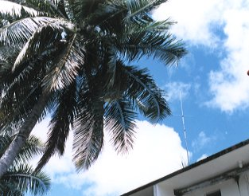
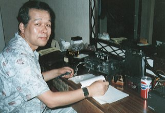
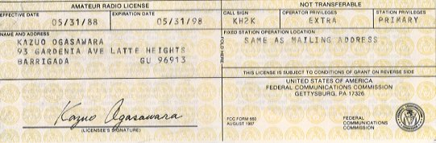
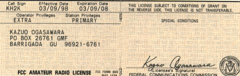
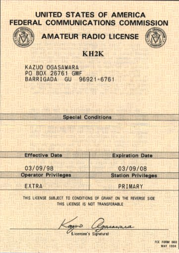

アメリカ(Guam)から運用

Guamで運用するKH2K
|
【アメリカでの運用】 KH2Kは筆者(JA1RJU)がアメリカに滞在している時に使用しているコールサインです。 現在、日本とアメリカ間には相互運用協定が結ばれているため、日本で開局している局は申請(註・1999年から申請の必要がなくなった)する事により、 「日本でその局に免許されている範囲」でアメリカから運用する事が出来ます。 ただし、KH2/JA1RJU、W6/JA1RJUの様にコールサインは日本のものを使う事になっています。 アメリカのアマチュア無線局の免許の有効期限は10年です。「包括免許」となっているため、従事者免許証だけで、 日本の"局免"に該当するものはありません。日本も早く"包括免許"制度になってほしいものです。 KH2KはGuamのコールサインです。FCCの試験を受けるためには米国内に「住所(メーリングアドレス)」が必要となります。 原則的にコールサインは免許人が申請したエリア(住所)のコールサインが割り当てられます。 私の場合、アメリカの信託統治となっているGuamでFCCの試験を受け、申請場所をGuamに在住している米国人の友人宅にしたため、 Guam (AH2/KH2/NH2/WH2)のコールサインが割り当てられました。 尚、コールサインを取得後に他の米国内のエリアに転居しても、希望すればそのままの従来のコールサインを使用することが出来ます。 アメリカでは資格別に区分けされたコールサインが割り振られているため、上級資格にアップグレードした時に希望すれば、 資格に応じた新しいコールサインに変更出来ます。 ちなみに、免許取得当時(1988年)の私の最初のクラス(ゼネラルクラス=2x2)では「KH2DA」のコールサインが割り当てられていました。 同年にアマチュア・エクストラ(2x1)の資格取得でコールサインは現在の「KH2K」に変更しました。   GuamのホテルからKH2Kの初運用。屋根に許可を受け、GP-ANTを設置した。 【アメリカで使用されるアマチュア局の周波数帯・帯域幅】
[周波数帯] [最高帯域幅]
1.800 to 2.000MHz 6KHz
3.500 to 4.000 6KHz
7.000 to 7.300 6KHz
10.100 tO 10.150 1KHz
14.000 to 14.350 6KHz
18.068 to 18.168 6KHz
21.000 to 21.450 6KHz
24.890 to 24.990 6KHz
28.000 to 29.700 20KHz
50.000 to 54.000 30KHz
144.000 to 148.000 30KHz
222.000 to 225.000 100KHz
420.000 to 450.000 12MHz
902.000 to 928.000 12MHz
1.240 to 1.300 Not Specified
2.300 to 2.310 Not Specified
2.390 to 2.450 Not Specified
3.300 to 3.500 Not Specified
5.650 to 5.925 Not Specified
10.000 to 10.500GHz Not Specified
(以下、省略）
(注：アメリカでは資格によって使用出来るバンド・周波数が異なるので運用に注意）
【アメリカの免許制度】 アメリカのアマチュア無線技士の資格には、以前はノビス、テクニシャン、テクニシャン・プラス、ジェネラル、アドバンスト、エクストラ級の6段階ありましたが、 FCC(米国連邦通信委員会)は、1999年12月31日付けでアマチュア無線制度の再編成を行い、2000年4月15日から、 6クラスに分かれていた資格をテクニシャン級、ジェネラル級、アマチュア・エクストラ級の3資格に変更、 電気通信術(CW実技)の試験も5WPM(1分間25文字)の一種類としました。 新規則の発効日以降は従来のノービス級、アドバンスト級の2つのライセンス資格は発行されなくなりました。 この制度がスタートするに当たり、FCCは現有ライセンスの自動昇級は行わず、 旧ライセンス所持者は、現有資格の運用操作範囲で引き続き運用出来、免許も無期限に更新が出来ることになっています。 (注:実技試験を既に合格しているアドバンスト級ライセンス保持者は、4B(40問)の筆記試験を4月15日の新資格施行日前までに受験することも出来、 エクストラの筆記試験に合格することによって、クレジットを得る事ができました。 同様に、1999年4月17日以降のエレメント3Bもしくは4Bの筆記試験科目合格者は、各々ジェネラル級、 アマチュア・エクストラ級に2000年4月15日に新規則施行される際に資格が与えられました。 ********************************************************************************** 【FCCのアマチュア無線技士の資格試験から電信を全面廃止】 さらに、2007年2月23日付けで、FCCの全てのアマチュアクラスから電信(Morse Code)の試験が廃止されました。
◎新資格は3クラスになります。
Element 2: Technician Class
Element 3: General Cluss
Element 4: Amateur Extra Cluss
--------------------------------------------------------------
Element 1 5WPM(毎分25字)のモールス信号受信(廃止)
Element 2 Technician 学科試験 35問（正解26問以上合格）
Element 3 General 学科試験 35問（正解26問以上合格）
Element 4 Amateur Extra 学科試験 50問（正解37問以上合格）
(注・ 学科試験は四者択一)
In the amateur radio license examination system, there is three written examination
elements [Elements 2, 3, and 4]. For each operator class, you must pass the elements
indicated:
○ Operator Class Required Elements
Technician Written Element 2
General Written Elements 2, 3
Amateur Extra Written Elements 2, 3, 4
学科試験は日本のように最初から“一発勝負”で最上級を受験する事は出来ません。 エレメント2の最下級のテクニシャン級から順番に受ける方式となっています。 エレメント2から最上級のエレメントのエクストラ級まで受験すると120問をこなす事になります。 各クラスの試験答案はすぐにその場で採点され、74％以上正解であれば合格。受験者に合否が知らされます。 合格の場合、受験者はさらに上級のクラスを受けるか聞かれ、希望すれば受験することが出来ます。 すでにFCCのライセンス(コールサイン)を取得している局は、その日から合格した新しいクラスの操作範囲で運用が可能です。 現在は日本国内でもVE(試験官=Volunteer Examiner)の資格を持った日本人のグループでFCCの試験が行われているので、 日本に居ながらアメリカの資格を取得できる様になっています。  1988年にFCCから発給された免許証。有効期間は10年、更新は無料。
 10年後(1998年)に更新された免許証(携帯用)
 最近はB6版程度の大きさの壁掛用の免許証(状)も発給される |
|
◎ [参考資料]
【旧アメリカの免許制度】
アメリカのアマチュア無線技士の資格には、次の6つがあります。
AMATEUR EXTRA Class
ADVANCE Class
GENERAL Class
TECHNICIAN PLUS Class
TECHNICIAN Class (CWなし)
NOVICE Class
【アマチュアの資格試験・試験科目】
電信の実技試験と法規・無線工学に関する筆記試験がある。資格別に細かい「エレメント」に分かれている。
電信の試験は最近新設された「TECHNICIAN Class」を除き、全てのクラスに科せられる。
（電信）
エレメント 1A 5WPM （25字/分）
エレメント 1B 13WPM （65字/分）
エレメント 1C 20WPM （100字/分）
（筆記試験）
エレメント 2 法規と初歩理論(Elemental theory)
エレメント 3A 法規と初歩理論(General-level theory)
エレメント 3B 法規と一般理論(General theory)
エレメント 4A 法規と中級理論(Intermediate theory)
エレメント 4B 法規と上級理論(Special exam on advanced techniques)
（試験科目）
各クラスに要求されている試験科目はつぎの通り。
[電信] [学科]
NOVICE 1A 2
TECHNICIAN --- 2・3A
TECHNICIAN PLUS 1A 2・3A
GENERAL 1B 2・3A・3B
ADVANCE 1B 2・3A・3B・4A
AMATEUR EXTRA 1C 2・3A・3B・4A・4B
電信の試験では一番速い、20WPMから行なわれ順次スピードを下げて行われる。20WPMが不合格でも、次に行われる13WPMを受けることが出来る。最後に5WPMの試験が行われる。5WPMも不合格の時は学科試験は受けられない。電信の合格点は70％。 （筆記試験の合格点） [74%合格] エレメント2 30問 (22/30) エレメント3A 25問 (19/25) エレメント3B 25問 (19/25) エレメント4A 50問 (37/50) エレメント4B 40問 (30/40) |